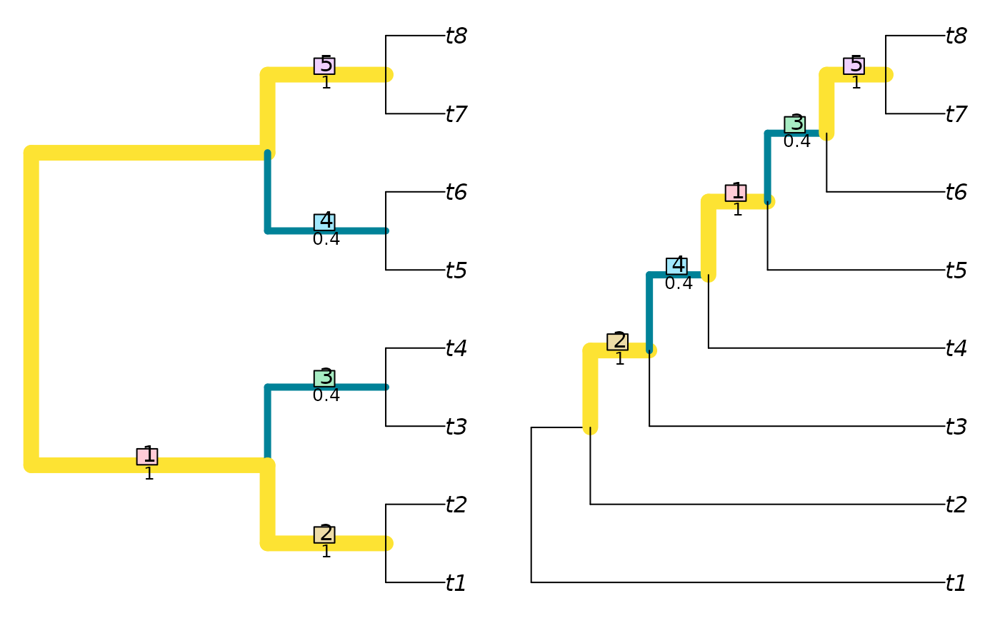

NyeSimilarity() and NyeSplitSimilarity() implement the
Generalized Robinson–Foulds
tree comparison metric of Nye et al. (2006).
In short, this finds the optimal matching that pairs each branch from
one tree with a branch in the second, where matchings are scored according to
the size of the largest split that is consistent with both of them,
normalized against the Jaccard index.
A more detailed account is available in the
vignettes.
NyeSimilarity( tree1, tree2 = NULL, similarity = TRUE, normalize = FALSE, normalizeMax = !is.logical(normalize), reportMatching = FALSE, diag = TRUE ) NyeSplitSimilarity( splits1, splits2, nTip = attr(splits1, "nTip"), reportMatching = FALSE )
| tree1 | Trees of class |
|---|---|
| tree2 | Trees of class |
| similarity | Logical specifying whether to report the result as a tree similarity, rather than a difference. |
| normalize | If a numeric value is provided, this will be used as a
maximum value against which to rescale results.
If |
| normalizeMax | When calculating similarity, normalize against the
maximum number of splits that could have been present ( |
| reportMatching | Logical specifying whether to return the clade matchings as an attribute of the score. |
| diag | Logical specifying whether to return similarities along the
diagonal, i.e. of each tree with itself. Applies only if |
| splits1 | Logical matrices where each row corresponds to a leaf,
either listed in the same order or bearing identical names (in any sequence),
and each column corresponds to a split, such that each leaf is identified as
a member of the ingroup ( |
| splits2 | Logical matrices where each row corresponds to a leaf,
either listed in the same order or bearing identical names (in any sequence),
and each column corresponds to a split, such that each leaf is identified as
a member of the ingroup ( |
| nTip | (Optional) Integer specifying the number of leaves in each split. |
NyeSimilarity() returns an array of numerics providing the
distances between each pair of trees in tree1 and tree2,
or splits1 and splits2.
The measure is defined as a similarity score. If similarity = FALSE, the
similarity score will be converted into a distance by doubling it and
subtracting it from the number of splits present in both trees.
This ensures consistency with JaccardRobinsonFoulds.
Note that NyeSimilarity(tree1, tree2) is equivalent to, but
slightly faster than, JaccardRobinsonFoulds
(tree1, tree2, k = 1, allowConflict = TRUE).
If normalize = TRUE and similarity = TRUE, then results will be rescaled
from zero to one by dividing by the mean number of splits in the two trees
being compared.
You may wish to normalize instead against the number of splits present
in the smaller tree, which represents the maximum value possible for a pair
of trees with the specified topologies (normalize = pmin.int); the
number of splits in the most resolved tree (normalize = pmax.int);
or the maximum value possible for any pair of trees with n leaves,
n - 3 (normalize = TreeTools::NTip(tree1) - 3L).
If normalize = TRUE and similarity = FALSE, then results will be rescaled
from zero to one by dividing by the total number of splits in the pair
of trees being considered.
Nye TMW, Liò P, Gilks WR (2006). “A novel algorithm and web-based tool for comparing two alternative phylogenetic trees.” Bioinformatics, 22(1), 117--119. doi: 10.1093/bioinformatics/bti720 , https://doi.org/10.1093/bioinformatics/bti720.
Other tree distances:
JaccardRobinsonFoulds(),
KendallColijn(),
MASTSize(),
MatchingSplitDistance(),
NNIDist(),
PathDist(),
Robinson-Foulds,
SPRDist(),
TreeDistance()
Martin R. Smith (martin.smith@durham.ac.uk)
#> [1] 3.8#> [1] 3.166667 2.750000 2.750000 2.500000 2.450000 2.500000NyeSimilarity(as.phylo(0:5, nTip = 8), similarity = FALSE)#> 1 2 3 4 5 #> 2 1.333333 #> 3 1.333333 1.333333 #> 4 2.166667 2.333333 2.333333 #> 5 2.333333 2.166667 2.333333 1.000000 #> 6 2.000000 2.000000 1.500000 1.500000 1.500000